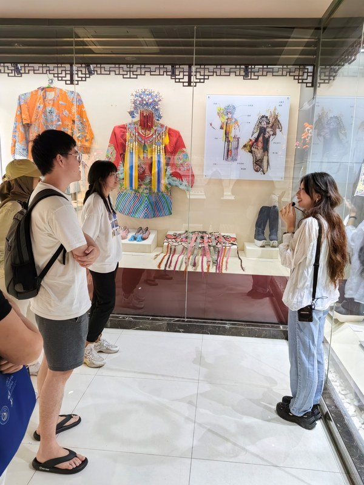

I’m Yanxin Xie, a research assistant in Guozhang Chen’s group at Peking University.
I build biologically constrained models to study how neural circuit dynamics support memory formation, consolidation, and generalisation—particularly during sleep.
A two-stage TF–Peak–Gene attention model linking chromatin accessibility and expression, evaluated with prediction baselines, ablations, and stage-conditioned analyses.
I graduated from Xi’an Jiaotong University with a B.Eng. in Automation in June 2026. My training in mathematics, control, and computation led me first to machine learning and bioinformatics, then to neural imaging and circuit modelling.
Today, I’m interested in how local plasticity and population dynamics work together to form and link memories, and what these mechanisms can teach us about brain-inspired computation.
Research Assistant · Guozhang Chen’s group Computational neuroscience
2025
The University of Hong Kong
Research Intern · Caro Lai’s group Neural imaging and structural plasticity
2023–2024
Xi’an Jiaotong University
Research Intern · AI & Bioinformatics Graph learning and computational genomics
2022–2026
Xi’an Jiaotong University
B.Eng. in Automation · Average 93.1/100
Outstanding GraduateXi’an Jiaotong University · 2026
National ScholarshipMinistry of Education of China · 2025
President’s ScholarshipRanked 1st in major in award year · 2024

Beyond the lab.
I enjoy museums, traditional culture, and volunteering. I led XJTU’s Student Culture and Museum Society from 2023 to 2025, organising cultural programmes and volunteer training. I’m also a certified Pilates instructor.
Get in touch
Let’s talk about brains & ideas.
Interested in memory, neural circuits, and biologically grounded computation.